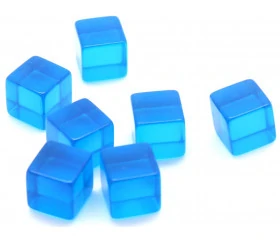

Les jouets en plastique Kruikube
Un jouet qui durera longtemps ! Ces cubes fantastiques sont fabriqués à partir de matériaux plastiques inodore de haute qualité. Le choix de la matière plastique assurera à votre enfant des heures de jeux sans risque de se blesser. La légère souplesse des cubes leur confère une grande résistance aux chocs et une longue durée de vie.
Matériel éducatif pour l'apprentissage des mathématiques et de la logique. Accessoires de jeu pour réaliser des constructions, faire des reproductions, classements, empilements.
Vous pouvez ainsi facilement mettre en place des exercices de manipulation de cube en autonomie avec vos élèves.
Sûr et non toxique, ce jouet convient aux enfants de plus de 3 ans, y compris les enfants d'âge préscolaire et les tout-petits plus âgés.